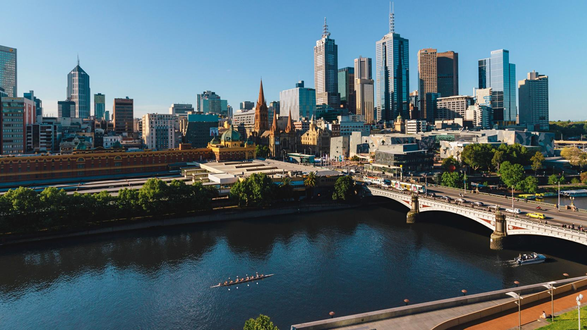

MELBOURNE
Melbourne è la capitale dello Stato del Victoria, nell'Australia sud-orientale, ed è la seconda città più popolosa dell'Australia
dopo Sydney. Essa corrisponde con la più ampia conurbazione chiamata informalmente Grande Melbourne o Greater Melbourne,
costituita di 31 municipalità che, nel complesso, racchiudono circa quattro milioni di persone, rendendola la seconda
area urbana più popolata della federazione dopo Sydney. La municipalità chiamata City of Melbourne ne rappresenta
il centro storico ed è la capitale dello Stato di Victoria. Spesso riportata come "capitale culturale d'Australia"
e "Città giardino", Melbourne è un indiscusso centro culturale internazionale, ed è stata la seconda città al mondo
dopo Edimburgo ad essere nominata "Città Letteraria" dall'UNESCO. A Melbourne è nato il cinema australiano (come
pure il primo lungometraggio nella storia del cinema), la televisione australiana, l'arte impressionista australiana
e una lunga serie di correnti artistiche, dalla musica alla letteratura. Città multiculturale per antonomasia, Melbourne
trova nello sport e nella varietà di cibi e tradizioni ulteriori punti di eccellenza. Anche per questo è stata nominata
per cinque anni consecutivi "città più vivibile al mondo" secondo la speciale classifica stilata da The Economist.
